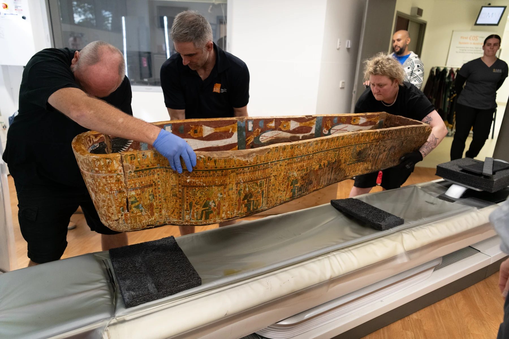
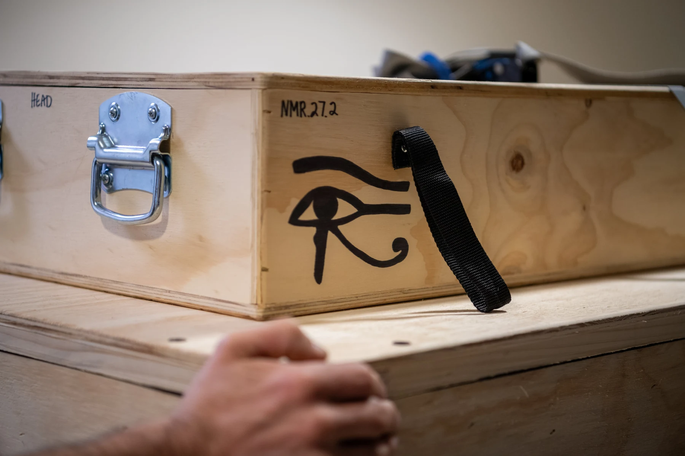
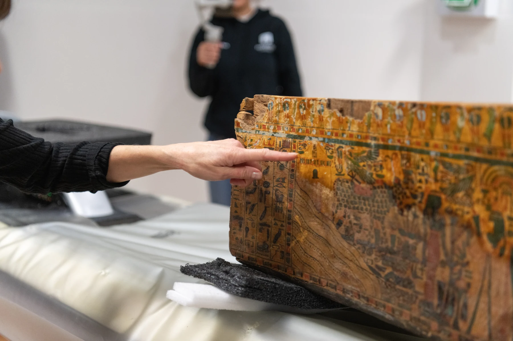
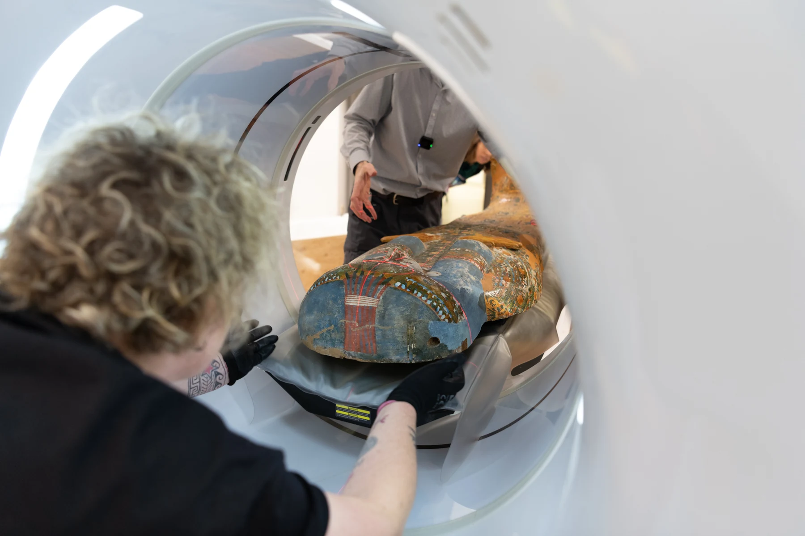
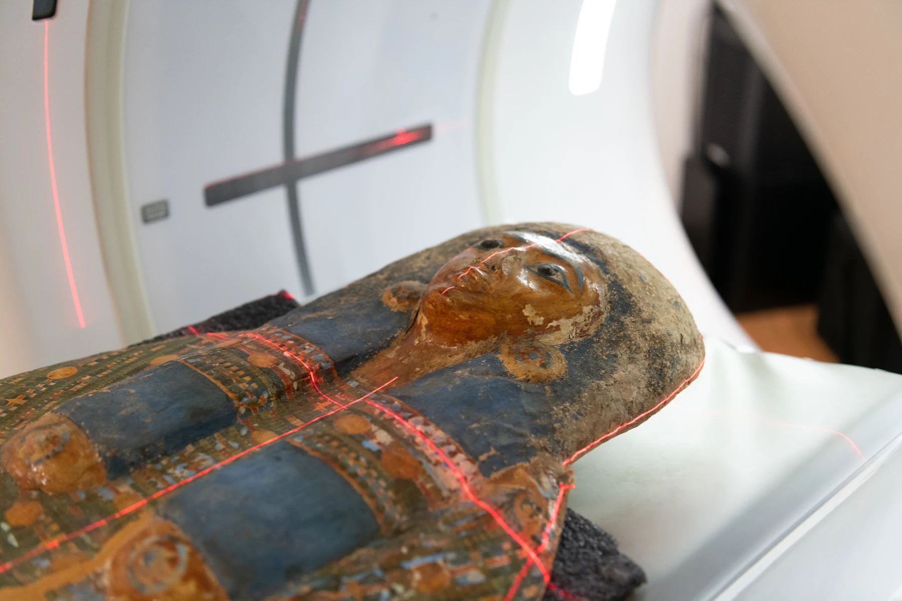
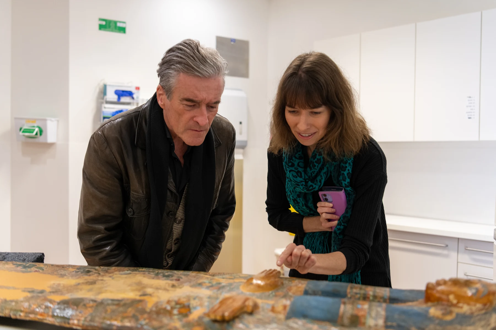
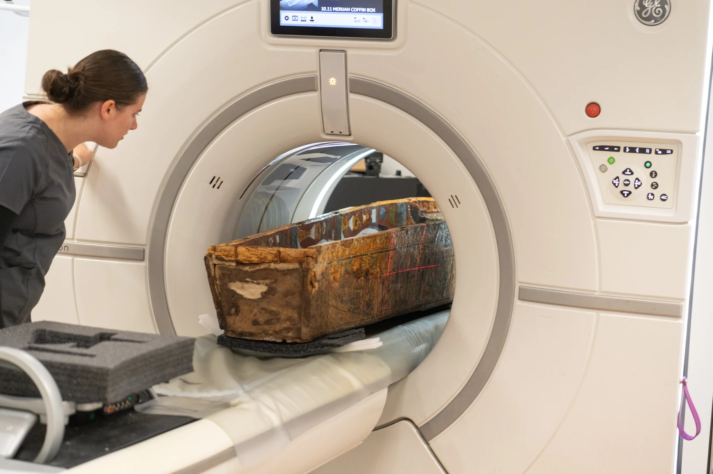
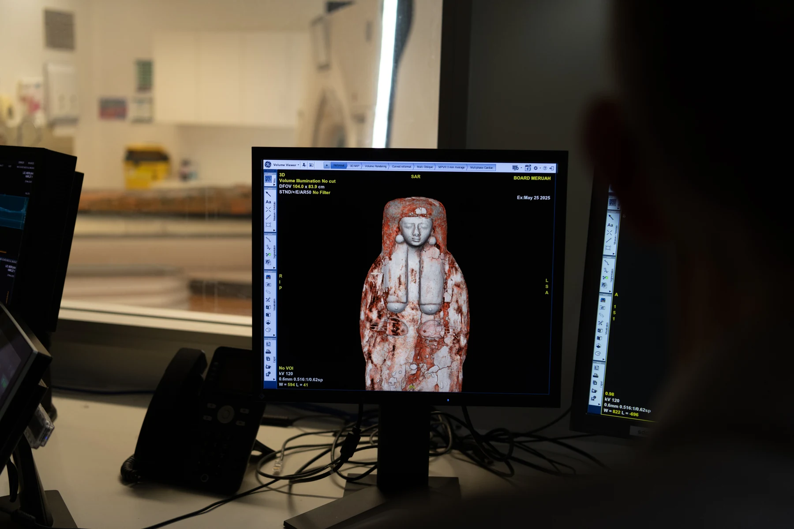

Field Notes · Macquarie University · 2025
A 3,000-year-old ancient Egyptian coffin. A modern hospital CT scanner. Macquarie University researchers, the Powerhouse Museum, and a small photography team - inside one of the most unusual shoots I've ever been part of.

Through my role creating content at Macquarie University, I was brought in to document a research project that doesn't happen every day - an ancient Egyptian coffin from the Powerhouse Museum's collection being transported to Macquarie University Hospital for CT scanning. The project was a collaboration between Macquarie University researchers and the Powerhouse Museum, with the goal of imaging what was inside the sealed coffin without opening it.
I was there for the whole process - from the moment the coffin arrived in its transport box marked with the Eye of Horus, through the scanning itself, and into the control room where the 3D renders appeared on screen in real time.
"3,000 years old. Never opened. And we were about to see inside."
Photographing in a CT suite is a different challenge. The room is clinical, the light is flat, and the moments you want to capture happen fast and don't repeat. Getting the coffin positioned inside the scanner, the laser alignment lines crossing the painted face, the researchers leaning in - these are single-chance shots.
The contrast between the ancient and the modern was what made every frame interesting. A 3,000-year-old painted wooden coffin inside a GE CT scanner. The hieroglyphics and the hospital equipment in the same frame. That tension was the story.
The Arrival





Inside the Scanner

Once the scan was complete, the team moved to the control room to watch the reconstruction render in real time. The 3D volume model of what was inside the coffin appeared on the monitors - bone structure, wrappings, artefacts - all without the coffin ever being opened. Watching 3,000 years of sealed history appear on a screen next to a GE logo and a hospital phone is something I won't forget.
The Control Room
